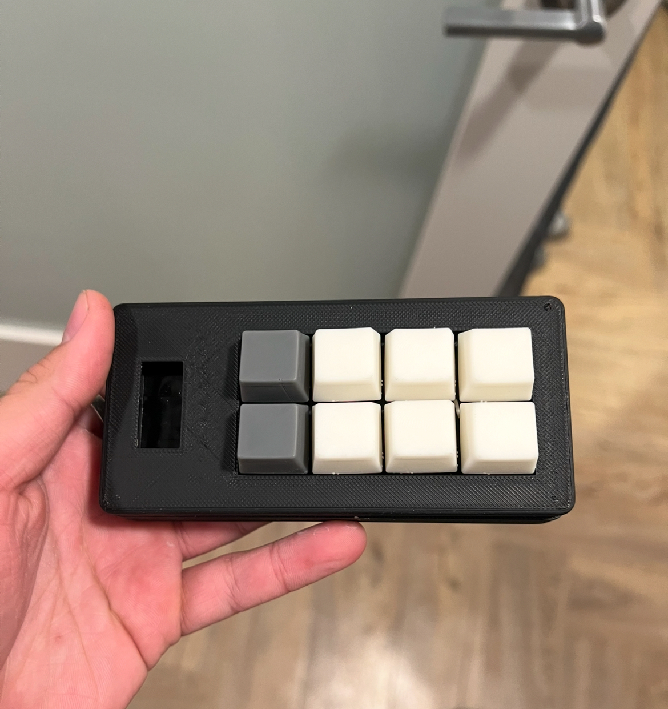
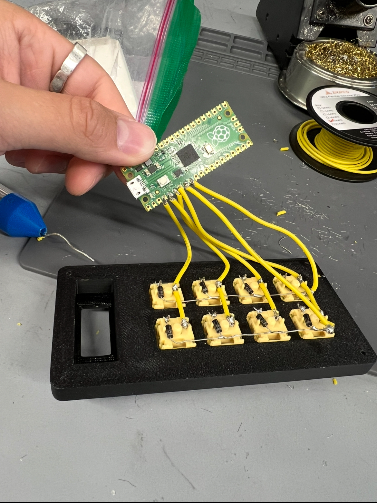
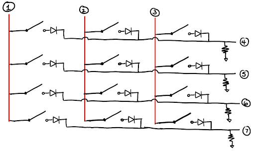

The Macropad
Date: 2024 · Role: Firmware & CAD


Overview
In this project, I made a 2 × 4 macropad using a Raspberry Pi Pico, with custom resin keycaps and a 3D-printed enclosure. While unnecessary for such a small macropad, I wired the buttons in a matrix formation to use fewer GPIO pins, as this would be necessary for a full keyboard.
Trials and Tribulations
The main troubles of this project came from making keycaps that fit. I made this as part of a new hire project for my work, and we were provided with cheap switches with untraditional stems. These stems were hard to design around and required very tight tolerances, which is why I printed the keycaps using SLA.